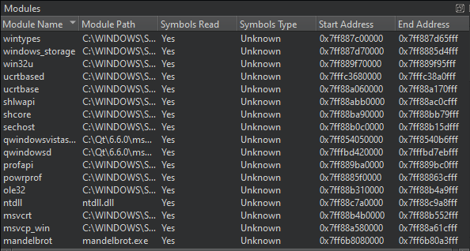
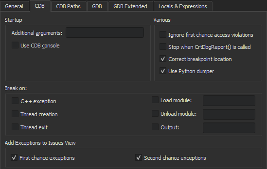

Viewing Modules
The Modules view displays information that the debugger plugin has about modules included in the application that is being debugged.
A module is:
- A dynamic link library (
.dll) in Windows - A shared object (
.so) in Linux - A dynamic shared library (
.dylib) in macOS

In addition, the view displays symbols within the modules and indicates where each module was loaded. Right-click column headers to show and hide columns in the view.
Right-click the view to select the following actions:
- Update the module list
- Show source files for a module
- Show dependencies between modules (Windows only)
- Load symbols for modules
- Examine modules
- Edit module files
- Show symbols in modules
- Show sections in modules
- Set debugger preferences
By default, the Modules view is hidden. To show it, select it in Views on the debugger toolbar.
Breaking on Loading Modules in CDB
When using CDB as debug backend, you can specify that the debugger should break when application modules are loaded or unloaded. To enable breaking for the specified modules, select Preferences > Debugger > CDB.

For more information, see Specifying CDB Settings.